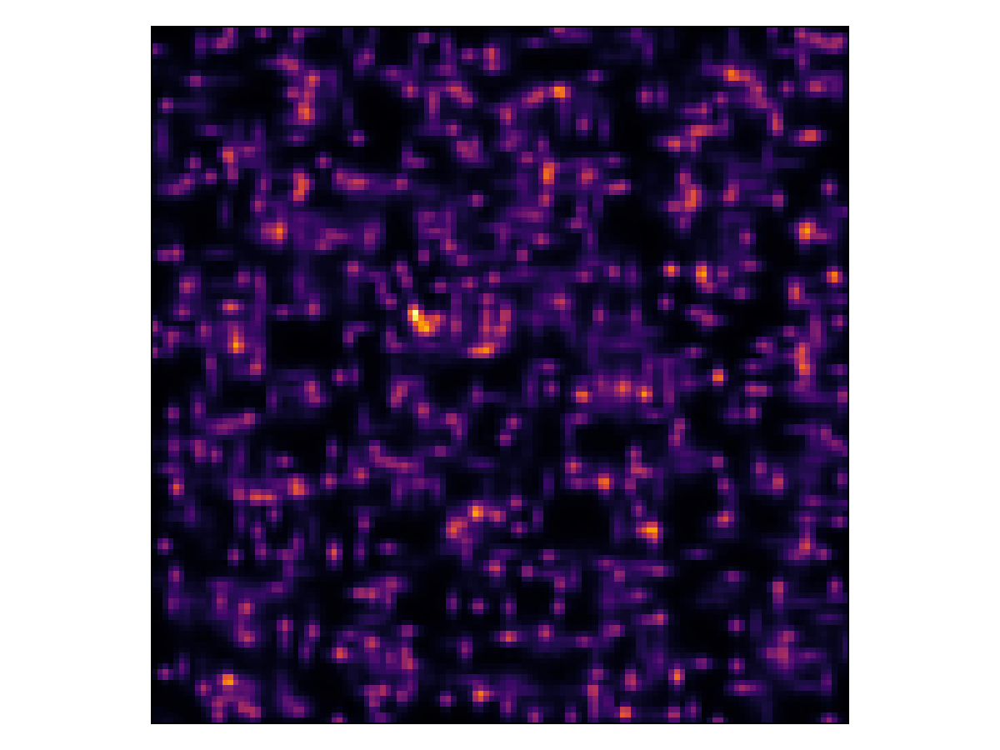
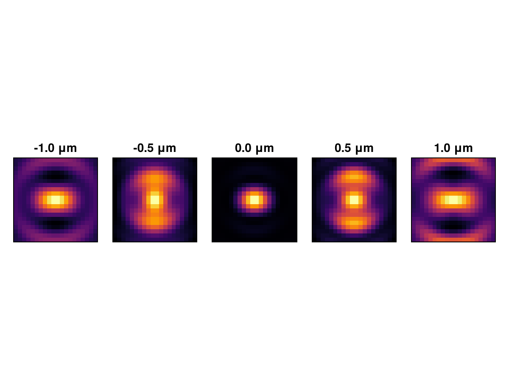
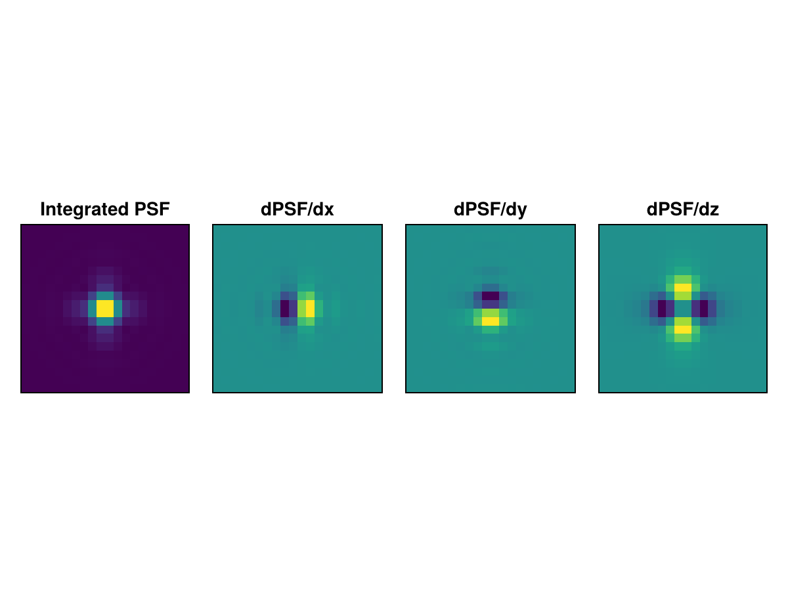

Examples
This page provides practical examples demonstrating common use cases of MicroscopePSFs.jl.
Rendering a Camera Image as a Heatmap
To render an image so that it matches the coordinate system used by cameras, we need to place the (1,1) pixel at the top left corner and have the $y$ axis descend. Note the deliberate use of a non-square camera pixel array to demonstrate the coordinate system.
using MicroscopePSFs
using CairoMakie
using Enzyme
# Create a psf
psf = AiryPSF(1.4, 0.532)
# Setup camera
nx, ny, pixel_size = 20, 10, 0.05 # 100 nm pixels
camera = IdealCamera(nx, ny, pixel_size)
# Render an image with a single emitter
x_microns, y_microns, photons = 0.5, 0.25, 1000.0 # Emitter position and brightness
image = integrate_pixels(psf, camera, Emitter2D(x_microns, y_microns, photons))
# Show image as a heatmap with pixel (1,1) at top left and y axis descending
fig = Figure()
ax = Axis(fig[1, 1], yreversed=true, aspect=DataAspect())
heatmap!(ax, image', colormap=:inferno)
display(fig)
save("camera_heatmap.png", fig)Generate a Simulation with Multiple Emitters
This example demonstrates how to simulate an image with multiple emitters very quickly. This could be used to simulate large data sets of SMLM data. It makes use of the SplinePSF and finite support regions.
using MicroscopePSFs
using CairoMakie
using Enzyme
# Create a psf with astigmatism
zc = ZernikeCoefficients(15)
zc.phase[6] = 0.5 # Add vertical astigmatism
psf = ScalarPSF(1.4, 0.532, 1.52; zernike_coeffs=zc)
# Create SplinePSF for speed. This is the slowest part of the simulation.
xy_sampling, z_sampling = 0.05, 0.1
x_range = y_range = -1.0:xy_sampling:1.0
z_range = -1.0:xy_sampling:1.0
psf_spline = SplinePSF(psf, x_range, y_range, z_range)
# Setup camera
nx, ny, pixel_size = 128, 128, 0.1 # 100 nm pixels
camera = IdealCamera(nx, ny, pixel_size)
# Create emitters
n_emitters = 5.0 * (nx * ny * pixel_size^2) # 5 μm^-2 of emitter density
emitters = [Emitter3D(nx * pixel_size * rand(), ny * pixel_size * rand(), rand()-0.5, 1000.0)
for _ in 1:n_emitters]
# Render the image using region of support option
image = integrate_pixels(psf_spline, camera, emitters; support=0.5)
fig = Figure()
ax = Axis(fig[1, 1], yreversed=true, aspect=DataAspect())
heatmap!(ax, image', colormap=:inferno)
hidedecorations!(ax)
display(fig)
save("camera_multi_emitters.png", fig)
Model a PSF Measurement with Stage Movement
In the VectorPSF model, moving the stage and moving the emitter are not equivalent. This example demonstrates how to simulate a series of images with the stage moving in the $z$ direction, while the emitter stays fixed on the coverslip. This is a common experimental prodecure to measure microscope PSFs.
using MicroscopePSFs
using CairoMakie
using Enzyme
# Create a Vector PSF with x-dipole
dipole = DipoleVector(1.0, 0.0, 0.0) # x-dipole
emitter = Emitter3D(0.5, 0.5, 0.0, 1000.0) # Emitter on coverslip
# Setup camera
nx, ny, pixel_size = 20, 20, 0.05 # 100 nm pixels
camera = IdealCamera(nx, ny, pixel_size)
z_stack = Vector{Array{Float64}}()
# Loop over z_stage positions
stage_positions = -1.0:0.5:1.0 # Z stage positions in microns
for z_stage in stage_positions
# Create a VectorPSF with the current z_stage position
psf = VectorPSF(1.4, 0.690, dipole; z_stage=z_stage)
# Integrate over the camera pixels
image = integrate_pixels(psf, camera, emitter)
# Store the image in the z_stack
push!(z_stack, image)
end
fig = Figure()
for (i, image) in enumerate(z_stack)
ax = Axis(fig[1, i], yreversed=true, aspect=DataAspect(), title="$(stage_positions[i]) μm")
heatmap!(ax, image', colormap=:inferno)
hidedecorations!(ax)
end
display(fig)
save("camera_z_stack_stage.png", fig)
Example of Using Enzyme to Differentiate a PSF
We can differentiate both the psf(x, y, z) and the integrate_pixels(psf, camera, emitter) functions using Enzyme.jl.
PSF Derivatives
using MicroscopePSFs
using CairoMakie
using Enzyme
# Camera setup
nx, ny, pixel_size = 20, 20, 0.1 # 100 nm pixels
camera = IdealCamera(nx, ny, pixel_size)
camera = IdealCamera(nx, ny, pixel_size)
# Create PSF with astigmatism
zc = ZernikeCoefficients(15)
zc.phase[6] = 0.5 # Add vertical astigmatism
psf = ScalarPSF(1.2, 0.6, 1.33; zernike_coeffs=zc)
# Calc derivative image
x_range = y_range = range(-0.5, 0.5, 40) # PSF field coordinates
# Calculate the PSF and its derivatives using Enzyme
dx_values = [Enzyme.autodiff(Enzyme.Reverse, x -> psf(x, y, 0.0), Active, Active(x))[1][1] for x in x_range, y in y_range]
dy_values = [Enzyme.autodiff(Enzyme.Reverse, y -> psf(x, y, 0.0), Active, Active(y))[1][1] for x in x_range, y in y_range]
dz_values = [Enzyme.autodiff(Enzyme.Reverse, z -> psf(x, y, z), Active, Active(0.0))[1][1] for x in x_range, y in y_range]
psf_arr = [psf(x, y, 0.0) for x in x_range, y in y_range]
# Plot with CairoMakie
fig = Figure()
ax = Axis(fig[1, 1], title = "PSF", yreversed=true, aspect=DataAspect())
heatmap!(ax, psf_arr')
hidedecorations!(ax)
ax2 = Axis(fig[1, 2], title = "dPSF/dx", yreversed=true, aspect=DataAspect())
heatmap!(ax2, dx_values')
hidedecorations!(ax2)
ax3 = Axis(fig[1, 3], title = "dPSF/dy", yreversed=true, aspect=DataAspect())
heatmap!(ax3, dy_values')
ax4 = Axis(fig[1, 4], title = "dPSF/dz", yreversed=true, aspect=DataAspect())
hidedecorations!(ax4)
heatmap!(ax4, dz_values')
display(fig)
save("psf_derivatives.png", fig)Integrated PSF Derivatives
using MicroscopePSFs
using CairoMakie
using Enzyme
# Setup camera
nx, ny, pixel_size = 20, 20, 0.1 # 100 nm pixels
camera = IdealCamera(nx, ny, pixel_size)
# Create PSF with astigmatism
zc = ZernikeCoefficients(15)
zc.phase[6] = 0.5 # Add vertical astigmatism
psf = ScalarPSF(1.2, 0.6, 1.33; zernike_coeffs=zc)
x_emitter = y_emitter = nx / 2 * pixel_size
z_emitter, photons = 0.0, 1000.0
# Use jacobian since our output is a 2D image
dx_image = Enzyme.jacobian(set_runtime_activity(Enzyme.Forward),
x -> integrate_pixels(psf, camera, Emitter3D(x, y_emitter, z_emitter, photons)),
x_emitter)[1]
dy_image = Enzyme.jacobian(set_runtime_activity(Enzyme.Forward),
y -> integrate_pixels(psf, camera, Emitter3D(x_emitter, y, z_emitter, photons)),
y_emitter)[1]
dz_image = Enzyme.jacobian(set_runtime_activity(Enzyme.Forward),
z -> integrate_pixels(psf, camera, Emitter3D(x_emitter, y_emitter, z, photons)),
z_emitter)[1]
psf_image = integrate_pixels(psf, camera, Emitter3D(x_emitter, y_emitter, z_emitter, photons))
# Plot with CairoMakie
fig2 = Figure()
ax5 = Axis(fig2[1, 1], title = "Integrated PSF", yreversed=true, aspect=DataAspect())
heatmap!(ax5, psf_image')
hidedecorations!(ax5)
ax6 = Axis(fig2[1, 2], title = "dPSF/dx", yreversed=true, aspect=DataAspect())
heatmap!(ax6, dx_image')
hidedecorations!(ax6)
ax7 = Axis(fig2[1, 3], title = "dPSF/dy", yreversed=true, aspect=DataAspect())
heatmap!(ax7, dy_image')
hidedecorations!(ax7)
ax8 = Axis(fig2[1, 4], title = "dPSF/dz", yreversed=true, aspect=DataAspect())
heatmap!(ax8, dz_image')
hidedecorations!(ax8)
display(fig2)
save("psf_integrated_derivatives.png", fig2)
CRLB Calculation Example
We can use the derivatives from autodiff to calculate CRLBs.
using MicroscopePSFs
using Enzyme
using CairoMakie
using LinearAlgebra
function crlb_poisson(psf, camera, emitter)
dx_values = Enzyme.jacobian(set_runtime_activity(Enzyme.Forward),
Const(x -> integrate_pixels(psf, camera, Emitter3D(x, emitter.y, emitter.z, emitter.photons))),
emitter.x)[1]
dy_values = Enzyme.jacobian(set_runtime_activity(Enzyme.Forward),
Const(y -> integrate_pixels(psf, camera, Emitter3D(emitter.x, y, emitter.z, emitter.photons))),
emitter.y)[1]
dz_values = Enzyme.jacobian(set_runtime_activity(Enzyme.Forward),
Const(z -> integrate_pixels(psf, camera, Emitter3D(emitter.x, emitter.y, z, emitter.photons))),
emitter.z)[1]
image = integrate_pixels(psf, camera, Emitter3D(emitter.x, emitter.y, emitter.z, emitter.photons)) .+ eps()
# Calculate the FI matrix
fi_matrix = zeros(3, 3)
fi_matrix[1, 1] = sum(dx_values .^ 2 ./ image)
fi_matrix[2, 1] = fi_matrix[1, 2] = sum(dx_values .* dy_values ./ image)
fi_matrix[3, 1] = fi_matrix[1, 3] = sum(dx_values .* dz_values ./ image)
fi_matrix[2, 2] = sum(dy_values .^ 2 ./ image)
fi_matrix[3, 2] = fi_matrix[2, 3] = sum(dy_values .* dz_values ./ image)
fi_matrix[3, 3] = sum(dz_values .^ 2 ./ image)
# Calculate the CRLB
crlb_matrix = inv(fi_matrix) # Inverse of the FI matrix
return diag(crlb_matrix) # Return the diagonal elements (CRLB for x, y, z)
end
# Setup camera
nx, ny, pixel_size = 20, 20, 0.1 # 100 nm pixels
camera = IdealCamera(nx, ny, pixel_size)
# Setup psf
zc = ZernikeCoefficients(15)
zc.phase[6] = 0.5 # Add vertical astigmatism
psf = ScalarPSF(1.2, 0.6, 1.33; zernike_coeffs=zc)
# Setup emitter
x_emitter = y_emitter = nx / 2 * pixel_size
z_emitter, photons = 0.0, 1000.0
# Loop over z positions
z_range = -1.0:0.05:1.0 # Z stage positions in microns
σ_x = Vector{Float64}(undef, length(z_range))
σ_y = Vector{Float64}(undef, length(z_range))
σ_z = Vector{Float64}(undef, length(z_range))
for (i, z) in enumerate(z_range)
# Create a new emitter with the current z position
emitter = Emitter3D(x_emitter, y_emitter, z, photons)
# Calculate the CRLB for the current emitter position
crlb_values = crlb_poisson(psf, camera, emitter)
σ_x[i] = sqrt(crlb_values[1])
σ_y[i] = sqrt(crlb_values[2])
σ_z[i] = sqrt(crlb_values[3])
end
# Plot with CairoMakie
fig = Figure()
ax = Axis(fig[1, 1], title = "CRLB", xlabel="z (μm)", ylabel="σ (μm)")
lines!(ax, z_range, σ_x, label="σ_x", color=:red)
lines!(ax, z_range, σ_y, label="σ_y", color=:blue)
lines!(ax, z_range, σ_z, label="σ_z", color=:green)
axislegend(ax)
display(fig)
save("crlb.png", fig)